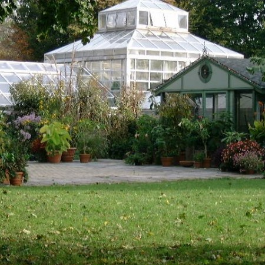

The Rose Garden includes over 100 varieties of roses. From the moment you pass underneath the white trellis,
you’ll be swept away by the colors and sweet scents of the Rose Garden. The Rose Garden was initiated by Thomas Melville,
one of Sailors’ Snug Harbor’s most notable Governors, and lived at several locations around campus
before its permanent home behind the Governor’s House.

Built on the site of the original Sailor’s Snug Harbor greenhouse,
this 2,800-square-foot enclosure is used for the propagation and exhibition of rare and beautiful plants.
The structure’s three-zone heating system creates arid, tropical and temperate conditions,
allowing for the creation of unique horticultural displays.The Healing Garden is a living memorial to the 267 Staten Islanders who perished on September 11, 2001.
The Healing Garden quietly evokes the healing power of trees as symbols of life and renewal.
Located on one acre of forested hillside, the woodland garden overlooks 20 acres of officially mapped wetlands.
The garden was officially completed and opened to the public in September 2008.The New York Chinese Scholar's Garden is a compilation of different gardens in China.
It is based on Ming Dynasty gardens (1368-1644 AD). All the architectural components of the NYCSG were fabricated in Suzhou, China,
including roof and floor tiles, columns and beams, doors and windows, bridges and paving materials.The garden features magnificent
rocks resembling mountains that inspired the poetry and paintings of Confucian, Buddhist, and Taoist monks, as well as other scholars.
Visitors can explore eight pavilions, a bamboo forest path, waterfalls, a Koi-filled pond, Chinese calligraphy,
and a variety of Ghongshi scholar’s rocks including a 15-foot formation that towers over the central courtyard.
A team of 40 Chinese artists and craftspeople spent a year in China creating the Garden’s components and another
six months in Staten Island as craftsmen-in-residence at Snug Harbor to complete the construction.